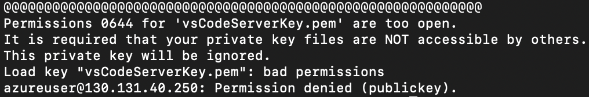
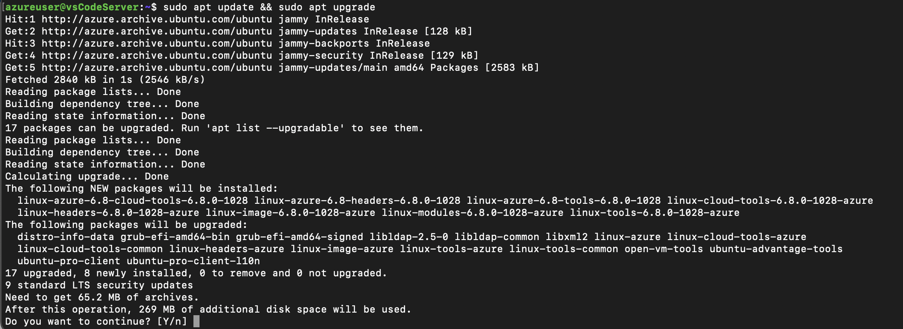
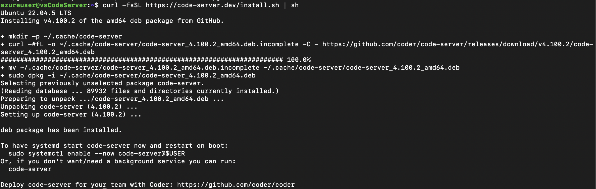
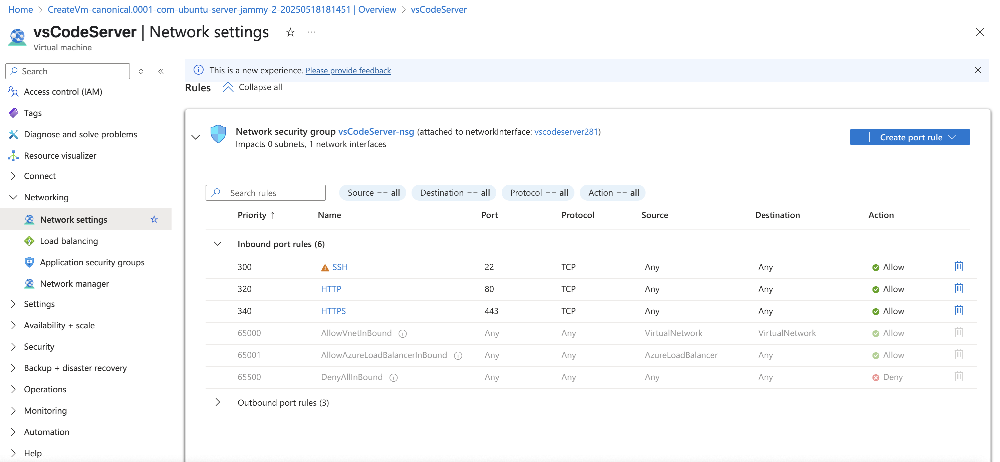
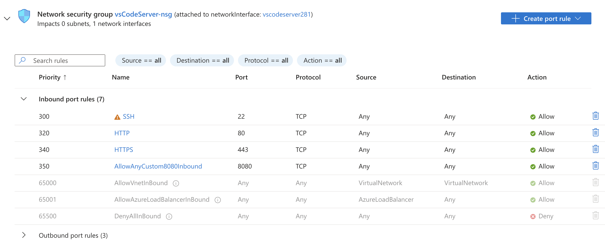
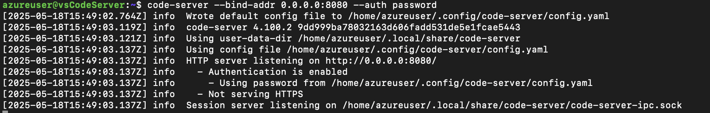

It should have following ports open :
Update permissions of the key.pem file to 0400 (Another page for errors)
ssh -i /path/to/id_rsa.pem @
Wrong SSH key permissions : Permissions 0644 for 'id_rsa.pem' are too open
Fixing wrong permissions
chmod 0400 id_rsa.pem
Now try connecting again.
If you want to delete all ssh keys. Warning : This will delete ALL keys, use it only if you fully understand it.
ssh-add -D
sudo apt update && sudo apt upgrade

sudo apt install -y git curl ufw
curl -fsSL https://code-server.dev/install.sh | sh

For testing purpose you can start code-server on port 80 using following command and view the IDE on http://>public-IP<
sudo code-server --bind-addr 0.0.0.0:80 --auth password
This is just for testing, we want our application running on the HTTP port (80) and not the editor. This is to confirm that code-server was installed and is running properly.
Open the port 8080 on the VM. The code server would not work on port 80 [Non-privileged user (not root) can't open a listening socket on ports below 1024]
We'd create a TCP "inbound port rule" on port 8080, with a low priority of 1000
The password would be in file /root/.config/code-server/config.yaml, it's content would be as follows
bind-addr: 127.0.0.1:8080
auth: password
password: 90de71f43a902f7cbb1eb670
cert: false
Test installation
code-server --version
code-server --bind-addr 0.0.0.0:8080 --auth password

Navigate to the public IP at port 8080 of VM in browser.
http://:8080
sudo netstat -tulnp | grep 8080
ss | grep 8080
sudo systemctl enable --now code-server@$USER
systemctl restart code-server@$USER
This will make sure code-server runs automatically on VM startup.
sudo nano /etc/systemd/system/code-server.service
# Paste this content (replace azureuser and password accordingly)
[Unit]
Description=code-server
After=network.target
[Service]
Type=simple
User=azureuser
ExecStart=/usr/bin/code-server --bind-addr 0.0.0.0:8080
Restart=always
RestartSec=10
Environment=PASSWORD=your_password_here
[Install]
WantedBy=multi-user.target
# Reload systemd and enable service
sudo systemctl daemon-reload
sudo systemctl enable code-server
sudo systemctl start code-server
# Check status
sudo systemctl status code-server
To set up application you can either SSH into machine and clone the git repo, or, you can use code server to clone the repo
Set up nodejs application
# nvm from https://github.com/nvm-sh/nvm
curl -o- https://raw.githubusercontent.com/nvm-sh/nvm/v0.40.3/install.sh | bash
source ~/.bashrc
nvm --version
nvm install --lts
nvm ls
nvm use
node --version
npm i
sudo apt install -y nginx
# create a file reverse-proxy as shown in codeblock below, then proceed with following instructions
sudo ln -s /etc/nginx/sites-available/reverse-proxy /etc/nginx/sites-enabled/
sudo rm -f /etc/nginx/sites-enabled/default
sudo nginx -t && sudo systemctl reload nginx
sudo systemctl status nginx
sudo systemctl enable nginx
sudo systemctl start nginx
# Content of /etc/nginx/sites-available/reverse-proxy
server {
listen 80 default_server;
server_name _;
location / {
proxy_pass http://localhost:3000/;
proxy_http_version 1.1;
proxy_set_header Host $host;
proxy_set_header X-Real-IP $remote_addr;
proxy_set_header X-Forwarded-For $proxy_add_x_forwarded_for;
proxy_set_header X-Forwarded-Proto $scheme;
}
}
Navigating to ip should throw 502 (Bad Gateway) error. After Starting the application using npm should fix it.